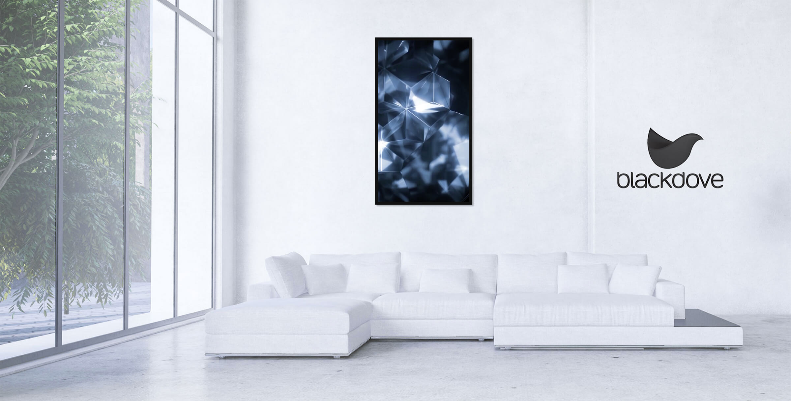
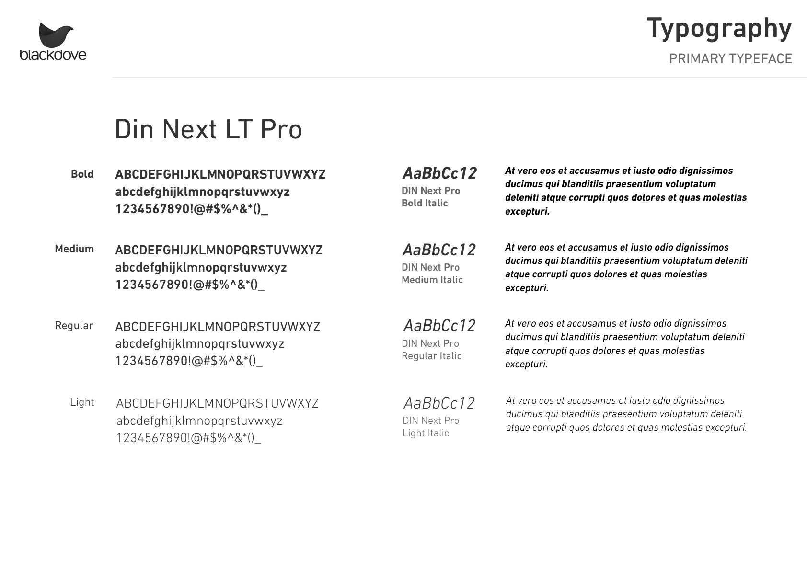
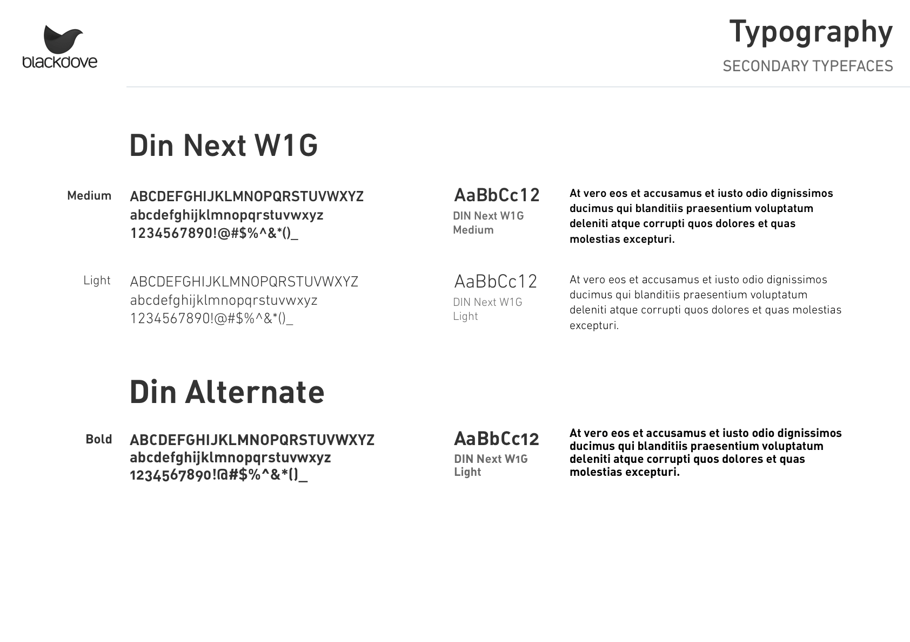
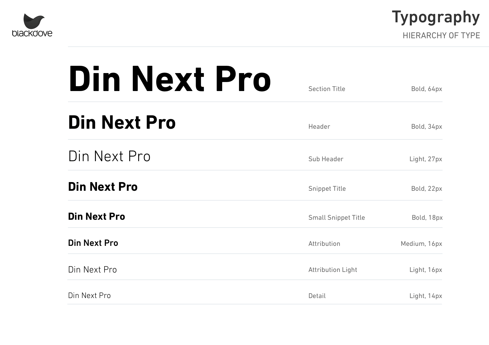
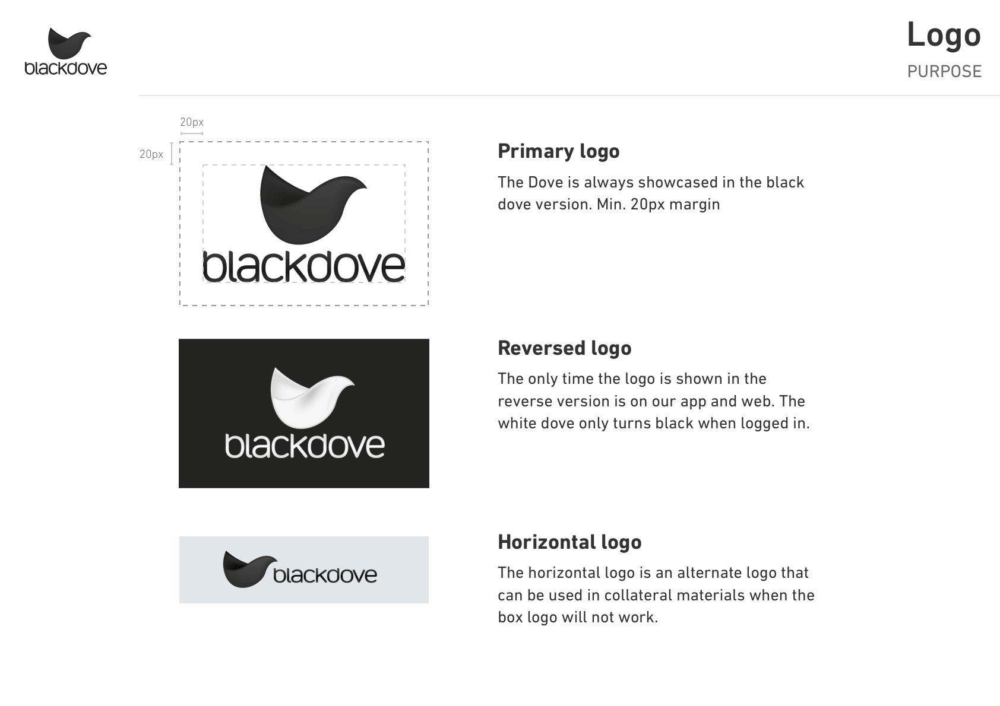
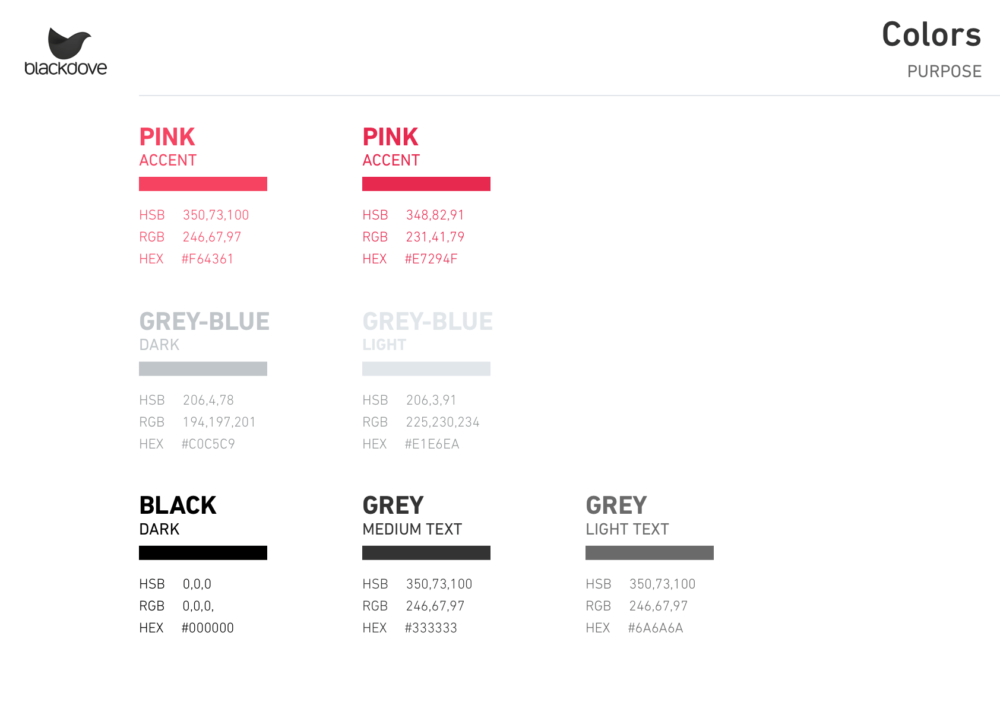
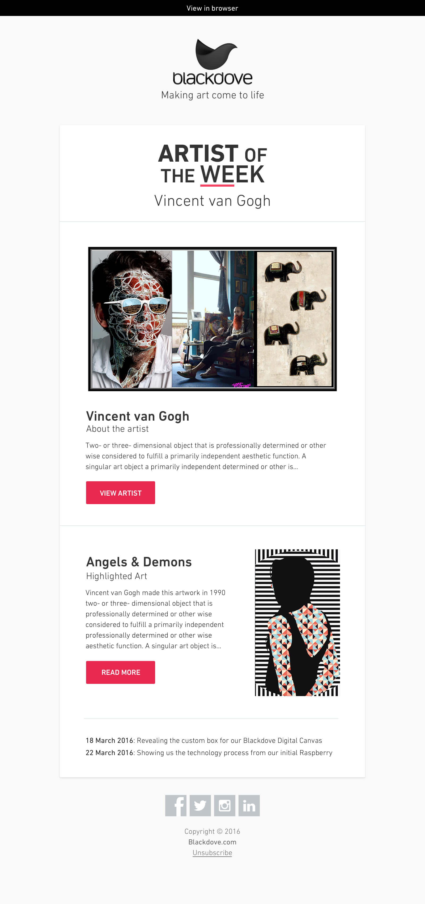
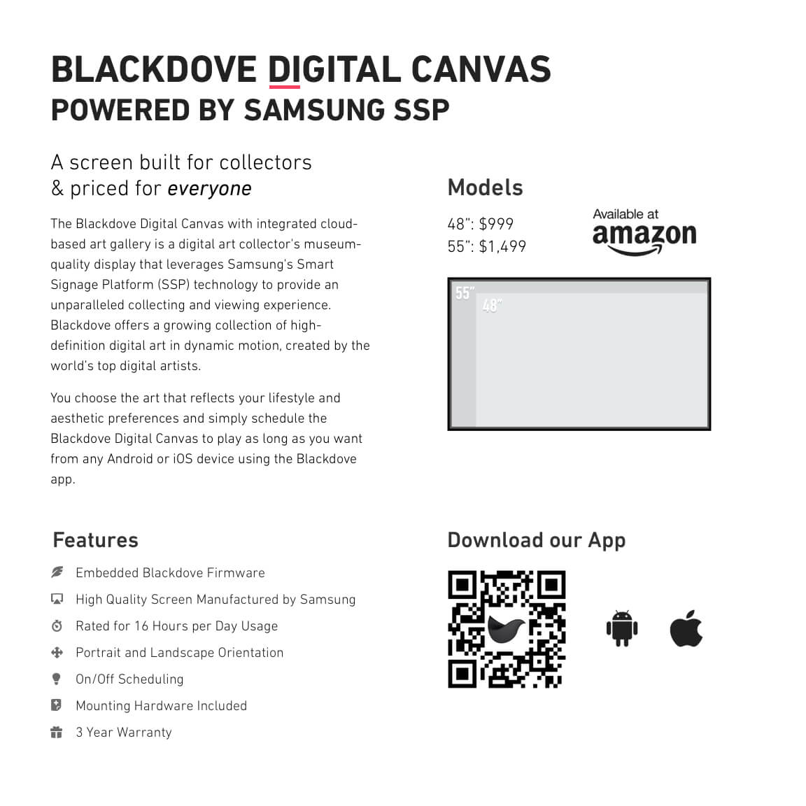

      
Blackdove is a digital art platform featuring a vast, growing collection of cutting-edge works by the world’s most innovative artists. Instantly enjoy a dynamic art experience on our own Samsung Canvas or via media players including Apple TV, Chromecast, Roku and Amazon Fire TV.
Begin this year they asked me to help them rethink the way they use their branding resources. Together with their team I created a branding guide and some examples that explain and show what resources are available and how to use them. This to ensure the Blackdove brand is used in a consistent and effective way across all of Blackdove's own products and the products of their partners.
Brand Design / February 2016 - Present